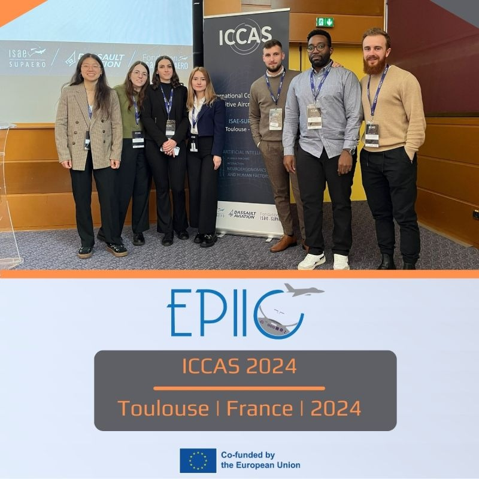

Physiological monitoring
Sensor selection, experimental protocols and data acquisition for assessing human state.
Research
Sensor selection, experimental protocols and data acquisition for assessing human state.
Processing physiological signals and extracting features to support the assessment of fatigue and attention.
EEG markers of attention in children with autism spectrum disorder (ASD) or attention-deficit/hyperactivity disorder (ADHD).
Aerospace research at INCAS
Enhanced Pilot Interfaces & Interactions for fighter Cockpit
An EU co-funded research project developing technologies for future fighter cockpits, including adaptive interfaces and crew monitoring systems. The project brings together organisations from 12 European countries.
In the Human Factor Lab at INCAS, I contribute to EPIIC’s research on physical fatigue in pilots. My work includes evaluating monitoring technologies, preparing data acquisition protocols, and processing physiological signals to extract features relevant to fatigue assessment.
Official project website ↗
Conference · May 2024
I attended the International Conference on Cognitive Aircraft Systems and co-authored an EPIIC paper reviewing ECG sensor technologies for monitoring physical fatigue in aviation.
European Commission campaign · 2026
I presented the EPIIC project in a video for the European Commission’s public campaign.
Doctoral research at POLITEHNICA Bucharest
I explore how electroencephalography (EEG) and performance during interactive game-based tasks can help identify markers of attention in children with ASD or ADHD. The scope and methodology may evolve as the research progresses.
Thesis and doctoral progress →